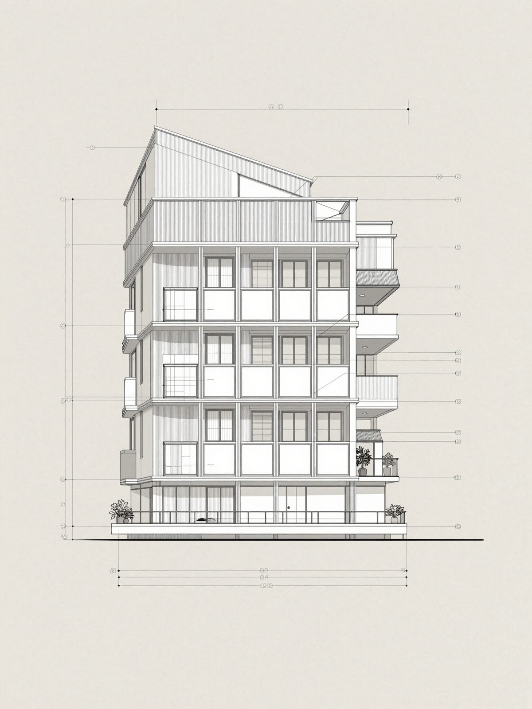
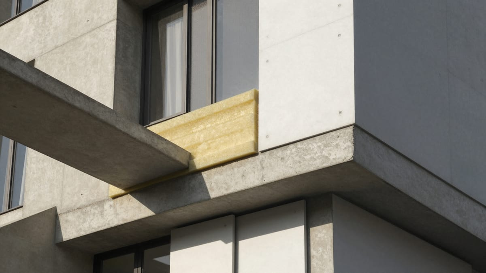

Cumple la Reglamentación Térmica 4.1.10 OGUC
Aseguramos que tu proyecto cumpla con los estándares técnicos vigentes en Chile. Optimizamos la envolvente térmica, reducimos riesgos de rechazo en la DOM y mejoramos el desempeño energético desde la etapa de diseño.

Plan 1 · Diagnóstico de cumplimiento
Revisión completa de tu proyecto según la RT 4.1.10 OGUC, con un informe claro de cumplimiento por requisito.
Solicitar →
Revisión de planos y especificaciones técnicas
Determinación de zona térmica según OGUC
Evaluación de transmitancia térmica (U/Rt)
Análisis de superficies vidriadas y orientación
Revisión de infiltración de aire y ventilación
Evaluación de riesgo de condensación superficial
Verificación de estándares de ventilación
Informe final con semáforo de cumplimiento
Plan 2 · Asesoría de mejora térmica
Diagnóstico más propuestas concretas de mejora, punto por punto, para alcanzar el cumplimiento.
Solicitar →- Todo lo incluido en el Plan 1
- Ajustes de aislación en techumbre, muros y piso
- Cambios de ventanas según orientación
- Estrategias de ventilación y reducción de puentes térmicos
- Mejora de hermeticidad
- Acompañamiento en la actualización de planos antes de la DOM
Plan 3 · Acompañamiento integral
Cobertura total desde el diseño hasta la recepción final ante la DOM.
Solicitar →- Todo lo incluido en los Planes 1 y 2
- Acompañamiento en reuniones técnicas
- Revisión de planos en cada entrega
- Coordinación de ensayos NCh 3295
- Apoyo para la calificación energética
- Soporte técnico en obra y hasta la recepción final DOM
Dudas habituales sobre la Reglamentación Térmica
Exigencias mínimas de acondicionamiento térmico para la envolvente del edificio —techumbre, muros, pisos ventilados y ventanas— según la zona térmica donde se ubica el proyecto. Su cumplimiento se acredita ante la DOM.
La DOM puede observar o rechazar el permiso de edificación. Detectarlo tarde implica rediseño y sobrecostos; por eso conviene evaluar el cumplimiento en etapa de diseño.
Idealmente en diseño o anteproyecto: optimizar la envolvente en esa etapa cuesta mucho menos que corregir cuando la arquitectura ya está definida.